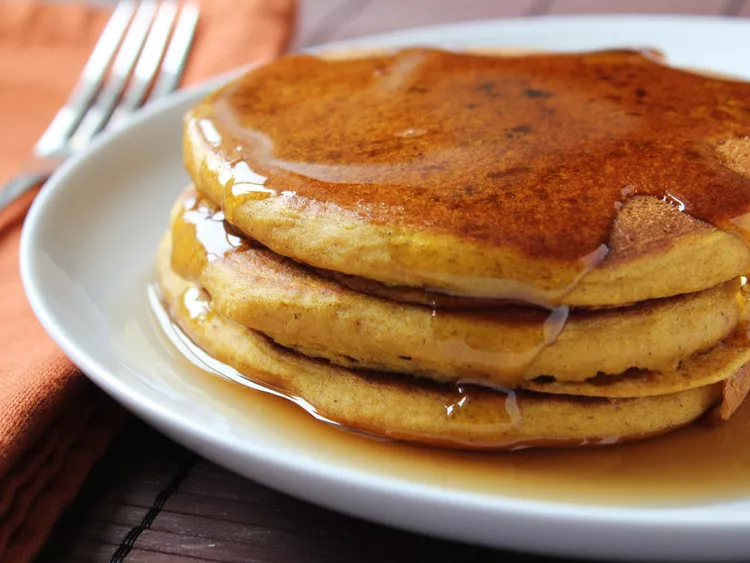

Pumpkin Pancakes

Description
Pumpkin pancakes are good in any season but are perfect to warm you up on
cold winter mornings. You can use either canned or cooked fresh pumpkin.
Ingredients
-
1 ½ cups milk
-
1 cup pumpkin puree
-
1 large egg
-
2 tablespoons vegetable oil
-
2 tablespoons vinegar
-
2 cups all-purpose flour
-
3 tablespoons brown sugar
-
2 teaspoons baking powder
- 1 teaspoon baking soda
- 1 teaspoon ground allspice
- 1 teaspoon ground cinnamon
- ½ teaspoon ground ginger
- ½ teaspoon salt
- cooking spray
Steps
- Gather all ingredients.
- Stir milk, pumpkin, egg, oil, and vinegar together in a large bowl until well combined.
-
Whisk flour, brown sugar, baking powder, baking soda, allspice, cinnamon,
ginger, and salt together in a separate bowl. Add to pumpkin mixture; whisk just until combined.
-
Spray a griddle or frying pan with cooking spray; heat over medium-high heat.
- Pour 3 to 4 tablespoons batter for each pancake onto the hot griddle and flatten batter slightly with a spoon.
- Cook until small bubbles appear, about 2 minutes.
- Flip and cook until golden brown, about 2 more minutes. Repeat with remaining batter.
- Serve hot and enjoy!
The recipe website